Praktikum 6: State Management dengan Provider
A. Pendahuluan
Pengembangan aplikasi mobile modern menggunakan Flutter memerlukan pengaturan state yang rapi agar tampilan aplikasi dapat berubah secara otomatis ketika data berubah. Di Flutter, state umumnya dibagi menjadi dua jenis, yaitu ephemeral state (state lokal) dan app state (state global). State lokal biasanya ditangani dengan method setState() dan cocok untuk data sementara yang hanya digunakan di satu widget. Akan tetapi, jika data harus dipakai atau diperbarui di beberapa halaman, penggunaan state lokal menjadi tidak praktis dan kurang efisien.
Untuk mengatasi masalah tersebut, praktikum ini menerapkan app state menggunakan paket Provider dengan pola ChangeNotifier pada aplikasi ResepKu. Melalui praktikum ini, dilakukan pembelajaran tentang cara mengelola state global, khususnya untuk menyimpan daftar resep favorit dan pengaturan tema aplikasi. Selain itu, praktikum ini juga menekankan pentingnya memahami struktur widget tree serta meletakkan provider pada posisi yang tepat, agar data dapat diakses dari semua halaman tanpa menimbulkan error ProviderNotFoundException.
B. Tujuan
Tujuan dari praktikum ini adalah:
- Memahami perbedaan utama antara ephemeral state (state lokal) dan app state (state global), serta mengetahui kapan masing-masing jenis state sebaiknya digunakan di Flutter.
- Menerapkan penyimpanan data secara terpusat dengan Provider dan ChangeNotifier untuk fitur daftar resep favorit pada aplikasi ResepKu.
- Menganalisis bagaimana letak ChangeNotifierProvider dalam widget tree memengaruhi kemampuan BuildContext untuk mengakses data saat berpindah antarhalaman.
- Membuat fitur penggantian tema aplikasi secara keseluruhan menggunakan ThemeProvider yang terhubung langsung dengan MaterialApp.
- Mengembangkan tampilan aplikasi yang responsif terhadap perubahan data, seperti perubahan ikon favorit, pembaruan angka pada badge secara langsung, serta fitur menghapus semua resep favorit dengan dialog konfirmasi terlebih dahulu.
C. Isi
Bagian A — Menyiapkan ResepKu dan State Lokal
1. Membuat Project
Buka terminal di folder kerja, lalu jalankan:
flutter create resepkuBuka folder resepku di VS Code. Kemudian, buat lima folder baru di dalam folder lib/, yaitu models, data, providers, pages, dan widgets. Pada akhir modul, susunan folder di dalam lib/ akan terlihat seperti berikut:
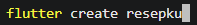
2. Membuat Model Recipe
Buka file lib/models/recipe.dart, lalu isi dengan kode seperti ini.
Penjelasan: Kode ini berisi pembuatan class Recipe pada file lib/models/recipe.dart. Class tersebut berfungsi sebagai cetakan atau rancangan data resep makanan, yang memiliki beberapa properti seperti ID, nama resep, tingkat kesulitan, jumlah kalori, dan daftar bahan. Class ini memakai constructor konstan dengan nilai wajib agar semua data harus terisi ketika objek resep dibuat. Selain itu, terdapat getter totalTimeMinutes yang otomatis menghitung waktu memasak total dengan menambahkan prepTimeMinutes dan cookTimeMinutes.
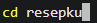
3. Menambahkan Data Dummy
Buka file lib/data/dummy_recipes.dart, lalu isi dengan kode seperti ini.
Penjelasan: Kode ini membuat variabel konstan dummyRecipes, yaitu daftar data contoh yang berisi enam objek Recipe. Setiap data resep dilengkapi dengan informasi seperti nama resep, asal kuliner, tingkat kesulitan, waktu pembuatan, jumlah kalori, rating, dan daftar bahan. Data contoh ini digunakan sebagai data awal yang ditampilkan pada aplikasi ResepKu sebelum nantinya diganti dengan data dari API pada modul berikutnya.
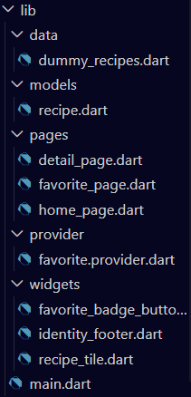
4. Halaman Home dan RecipeTile
Buka file lib/widgets/identity_footer.dart, lalu isi dengan kode seperti ini.
Penjelasan: Kode ini membuat widget IdentityFooter, yaitu widget yang digunakan untuk menampilkan baris identitas berisi NIM dan nama mahasiswa pada bagian bawah layar. Widget ini memakai Column dan Expanded untuk menyusun konten utama aplikasi, serta menggunakan MediaQuery.removePadding dan SafeArea agar informasi identitas tetap terlihat dengan baik dan tidak terpotong oleh elemen sistem perangkat pada setiap halaman.
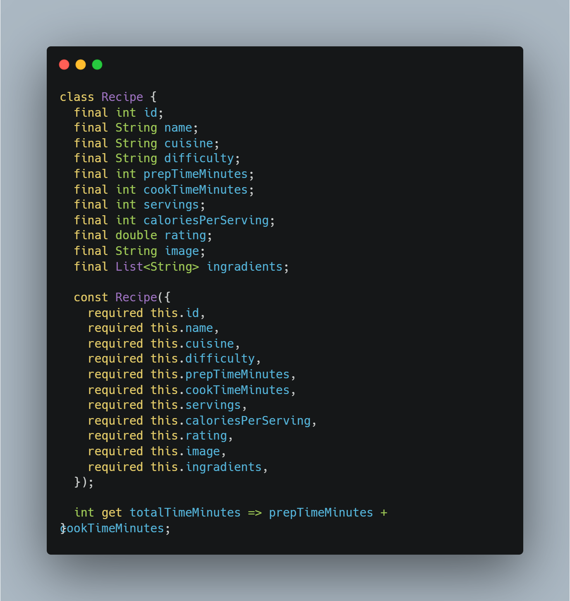
File lib/main.dart (versi awal).
Penjelasan: Kode ini merupakan titik awal atau entry point aplikasi ResepKu yang menjalankan widget ResepKuApp melalui konfigurasi MaterialApp. Pada kode ini, warna utama aplikasi diatur menggunakan deepOrange, banner debug disembunyikan, dan HomePage ditetapkan sebagai halaman pertama yang muncul saat aplikasi dibuka. Selain itu, parameter builder digunakan untuk membungkus seluruh navigasi aplikasi dengan IdentityFooter, sehingga NIM dan nama mahasiswa selalu tampil di bagian bawah setiap halaman.
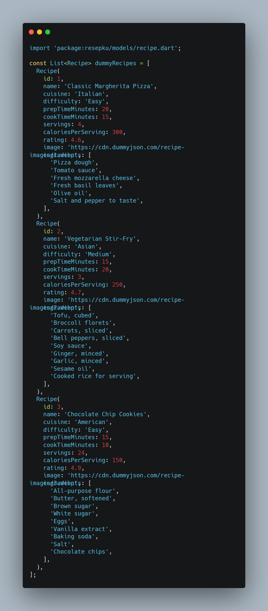
File lib/pages/home_page.dart (versi awal).
Penjelasan: Kode ini membuat widget HomePage yang berbasis StatelessWidget sebagai tampilan halaman utama aplikasi ResepKu. Halaman ini menggunakan Scaffold dengan AppBar bertuliskan "ResepKu". Pada bagian body, terdapat ListView yang menampilkan seluruh data resep dari dummyRecipes secara berurutan menggunakan widget RecipeTile.
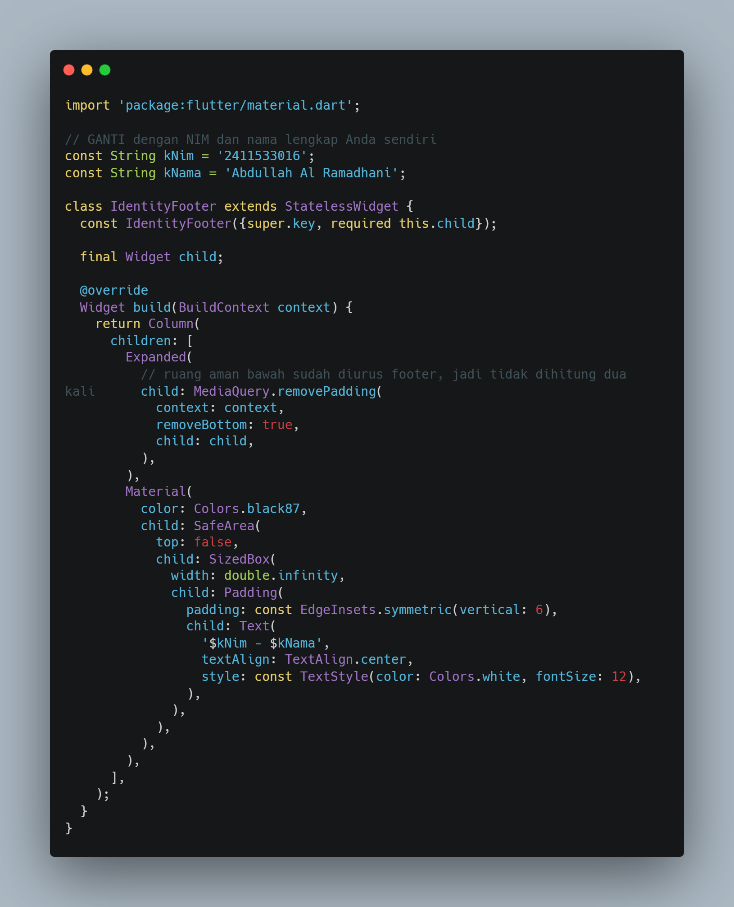
File lib/widgets/recipe_tile.dart (versi awal).
Penjelasan: Kode ini membuat widget RecipeTile berbasis StatelessWidget untuk menampilkan satu data resep dalam daftar menggunakan ListTile. Widget ini menampilkan huruf awal nama resep pada CircleAvatar, nama resep sebagai judul, serta subjudul yang berisi jenis kuliner, total waktu memasak, dan rating resep. Selain itu, saat item resep ditekan, event onTap akan memindahkan pengguna ke halaman DetailPage menggunakan Navigator.push sambil membawa data resep yang dipilih.
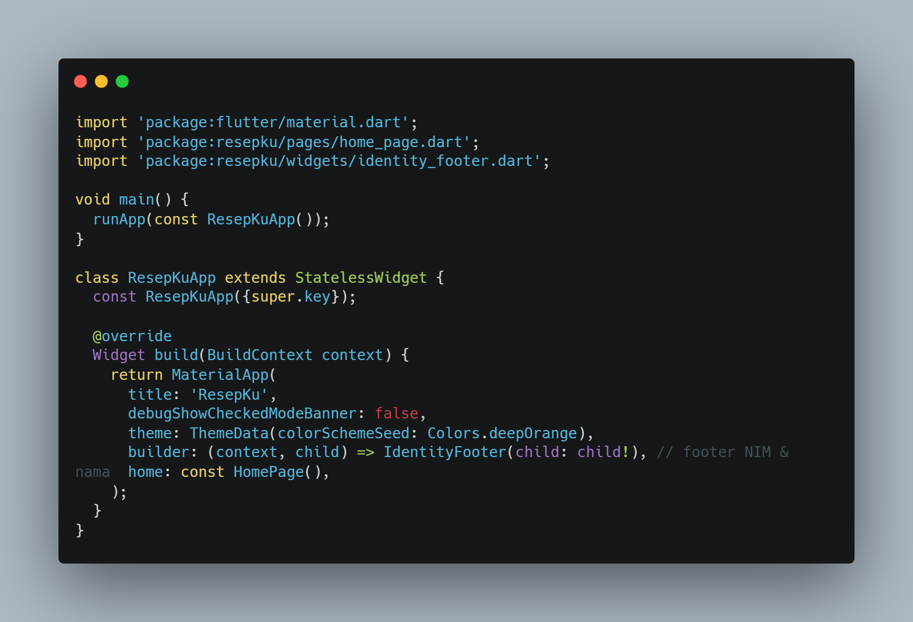
5. Halaman Detail dengan setState()
Buka file lib/pages/detail_page.dart (versi awal), lalu isi dengan kode seperti ini.
Penjelasan: Kode ini membuat halaman detail resep berbasis StatefulWidget yang menggunakan state lokal untuk mengatur perubahan jumlah porsi secara langsung. Nilai awal porsi diambil dari data resep melalui initState(). Ketika tombol tambah atau kurangi porsi ditekan, nilai _servings akan berubah, sehingga total kalori juga dihitung ulang secara otomatis. Halaman ini juga menampilkan informasi resep, seperti jenis kuliner, tingkat kesulitan, total waktu memasak, dan daftar bahan menggunakan ListView.
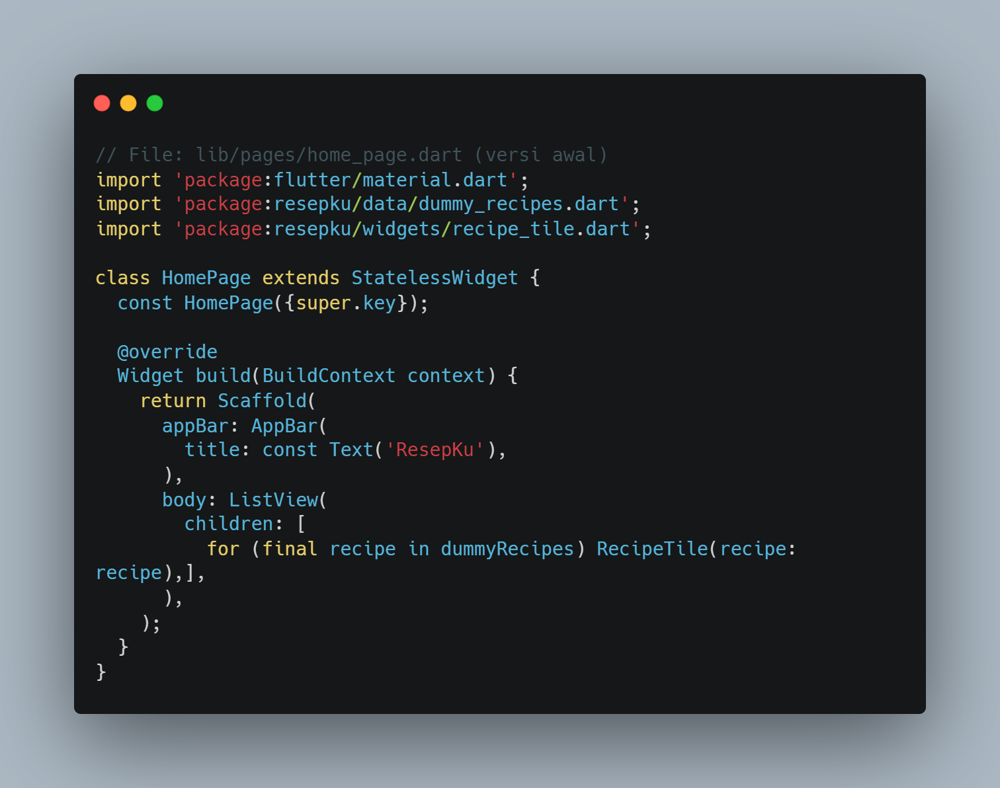
6. Checkpoint 1
Tampilan Checkpoint 1 Bagian A menunjukkan halaman utama ResepKu yang berhasil menampilkan daftar resep makanan, serta halaman detail yang menggunakan state lokal setState() untuk mengatur jumlah porsi dan menghitung total kalori secara langsung. Ketika jumlah porsi diubah, total kalori ikut diperbarui otomatis, misalnya 4 porsi menjadi 1.200 kkal dan 1 porsi menjadi 300 kkal. Tombol pengurang porsi (-) juga otomatis tidak dapat ditekan ketika jumlah porsi sudah berada pada batas minimum, yaitu 1. Selain itu, footer identitas yang berisi NIM 2411533016 dan nama Abdullah Al Ramadhani tampil secara konsisten di bagian bawah seluruh halaman.
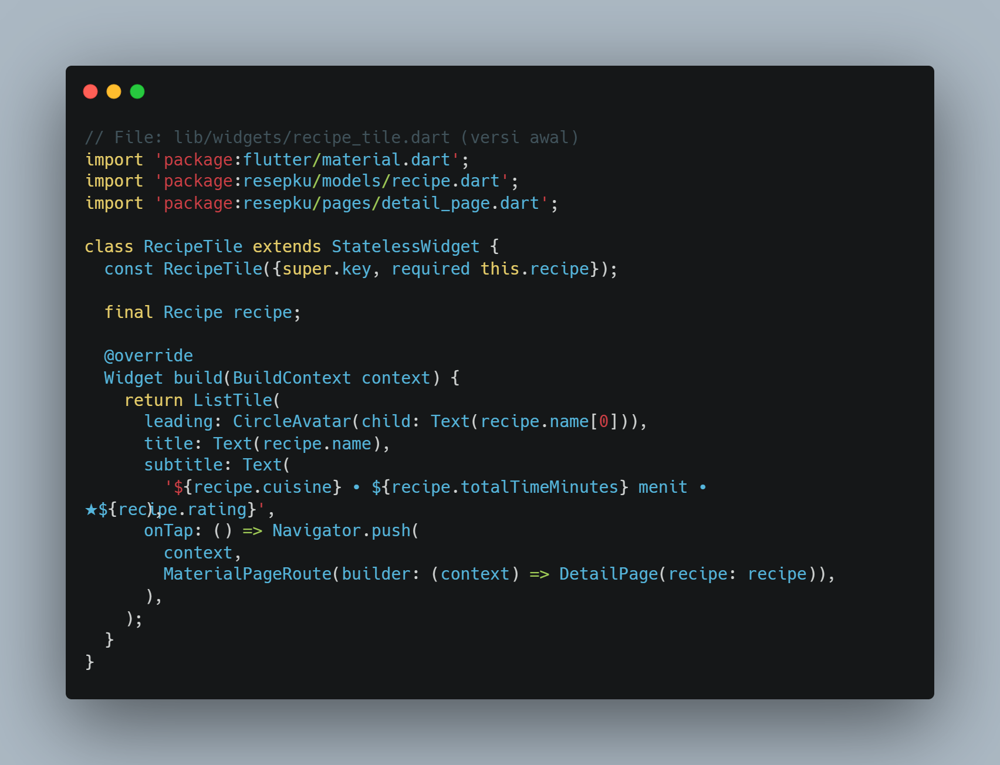
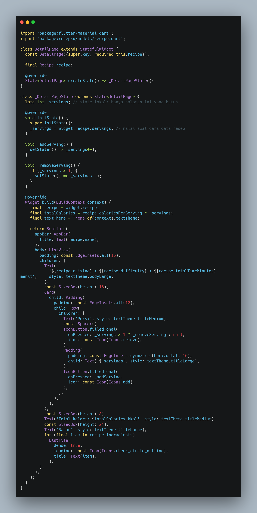
Bagian B — Favorit dengan State Lokal
1. Mengganti RecipeTile
Ganti seluruh isi recipe_tile.dart dengan versi eksperimen berikut.
Penjelasan: Kode ini mengubah RecipeTile menjadi StatefulWidget agar setiap item resep dapat menyimpan status favoritnya sendiri melalui variabel _isFavorite. Ketika ikon hati ditekan, setState() dipanggil untuk mengubah nilai _isFavorite, sehingga bentuk dan warna ikon berubah hanya pada tile yang ditekan. Percobaan ini bertujuan menunjukkan keterbatasan state lokal, yaitu data favorit yang tersimpan di setiap tile tidak dapat diakses atau dibagikan ke widget lain, seperti badge jumlah favorit di HomePage maupun ikon favorit pada DetailPage.
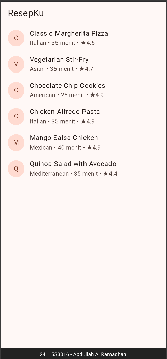
2. Mengamati Hasilnya
Lakukan hot reload. Tap ikon hati pada dua resep.
Pertanyaan 1: Apakah ikon hati berubah? Mengapa?
Jawaban: Ya, ikon hati berubah bentuk dan warna ketika ditekan. Hal ini terjadi karena RecipeTile menggunakan StatefulWidget, lalu pemanggilan setState() pada tombol membuat widget tersebut dibangun ulang secara lokal, sehingga nilai _isFavorite ikut diperbarui.
Pertanyaan 2: Coba tampilkan jumlah resep favorit di judul AppBar HomePage. Apakah hal itu dapat dilakukan? Di class mana data _isFavorite berada, dan apakah HomePage dapat membacanya?
Jawaban: Tidak dapat dilakukan secara langsung. Variabel _isFavorite berada di dalam class _RecipeTileState yang bersifat private dan hanya tersimpan pada masing-masing tile. Karena itu, HomePage tidak memiliki akses untuk membaca atau menghitung total nilai _isFavorite dari semua tile.
Pertanyaan 3: Buka halaman detail dari resep yang sudah difavoritkan. Bagaimana halaman detail dapat mengetahui bahwa resep tersebut favorit?
Jawaban: Halaman DetailPage tidak dapat mengetahui status favorit resep tersebut. Hal ini terjadi karena _isFavorite hanya disimpan secara lokal di _RecipeTileState. Saat berpindah ke DetailPage, data yang dikirimkan hanya objek Recipe dan tidak menyertakan informasi status favorit dari RecipeTile.
Bagian C — Fitur Favorit dengan Provider
1. Memasang Provider dan Membuat FavoriteProvider
Ketik ini pada terminal, lalu run:
flutter pub add providerPerintah ini digunakan untuk menambahkan paket provider ke dalam file pubspec.yaml dan mengunduhnya ke dalam proyek. Setelah itu, dibuat class untuk mengelola state global:
Buka file lib/providers/favorite_provider.dart, lalu isi dengan kode seperti ini.
Penjelasan: Kode ini membuat class FavoriteProvider yang mewarisi ChangeNotifier untuk mengatur daftar resep favorit secara global di seluruh aplikasi. Daftar favorit disimpan secara private agar datanya lebih aman. Class ini juga menyediakan fungsi isFavorite untuk memeriksa apakah sebuah resep sudah difavoritkan, fungsi toggle untuk menambah atau menghapus resep dari daftar favorit, serta fungsi clear untuk menghapus semua favorit. Setiap kali daftar favorit berubah, notifyListeners() dipanggil agar widget yang menggunakan provider ini, seperti badge jumlah favorit di AppBar, ikon favorit di halaman detail, dan daftar di halaman favorit, ikut diperbarui secara otomatis.
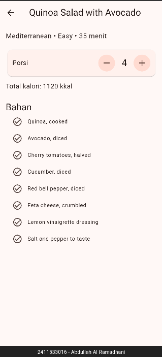
2. Memasang Provider di Atas MaterialApp
Buka file lib/main.dart, lalu isi dengan kode seperti ini.
Penjelasan: Kode ini memperbarui titik awal aplikasi dengan menambahkan FavoriteProvider ke dalam MultiProvider pada posisi paling atas, yaitu sebelum MaterialApp. Penempatan ini membuat data favorit dapat diakses dari semua halaman dalam aplikasi. Dengan begitu, setiap perubahan pada daftar favorit dapat dipantau oleh widget mana pun di dalam aplikasi. Konfigurasi utama tetap dipertahankan, seperti warna tema deepOrange, HomePage sebagai halaman pembuka, dan penggunaan IdentityFooter untuk menampilkan NIM serta nama mahasiswa di bagian bawah setiap halaman.
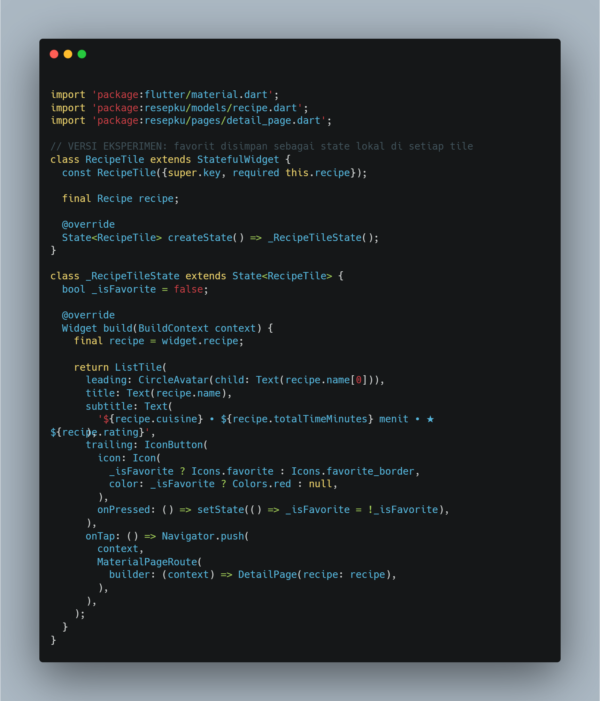
3. RecipeTile Membaca Data dari Provider
Buka file lib/widgets/recipe_tile.dart, lalu isi dengan kode seperti ini.
Penjelasan: Kode ini mengubah RecipeTile kembali menjadi StatelessWidget yang terhubung dengan FavoriteProvider untuk membaca data favorit global. Pada method build(), context.watch<FavoriteProvider>() digunakan agar tampilan ikon hati otomatis berubah ketika status favorit resep berubah. Sementara itu, context.read<FavoriteProvider>() dipakai di dalam onPressed untuk menjalankan fungsi toggle() tanpa perlu terus-menerus memantau perubahan data. Widget ini tetap menampilkan nama resep, jenis kuliner, waktu memasak, dan rating, serta mengarahkan pengguna ke DetailPage ketika item resep ditekan.
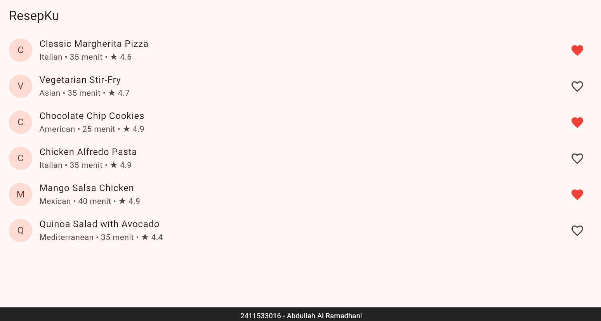
4. Tombol Favorit di Halaman Detail
Hasil akhir detail_page.dart.
Penjelasan: Kode ini memperbarui halaman detail resep dengan menggabungkan dua jenis state management sekaligus, yaitu state lokal dan state global. State lokal _servings digunakan untuk mengelola jumlah porsi dan kalkulasi total kalori secara dinamis saat tombol pengubah porsi ditekan, sedangkan state global diakses melalui FavoriteProvider menggunakan context.watch untuk memantau status ikon favorit pada AppBar secara real time serta context.read untuk memicu method toggle() saat ikon hati ditekan.
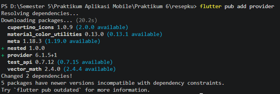
5. Halaman Favorit
Buka file lib/pages/favorite_page.dart, lalu isi dengan kode seperti ini.
Penjelasan: Kode ini membuat halaman Favorit Saya berbasis StatelessWidget yang menggunakan Consumer<FavoriteProvider> untuk memantau perubahan daftar resep favorit secara langsung. Jika belum ada resep favorit, halaman menampilkan pesan petunjuk di tengah layar. Namun, jika sudah ada resep favorit, daftar tersebut ditampilkan menggunakan ListView dan ListTile. Setiap item dilengkapi tombol hapus yang memanggil fungsi favorite.toggle(recipe) untuk mengeluarkan resep dari daftar favorit.
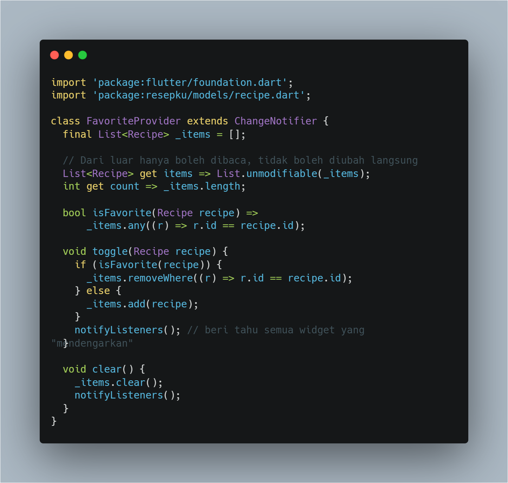
6. Badge Jumlah Favorit di AppBar
Buka file lib/widgets/favorite_badge_button.dart, lalu isi dengan kode seperti ini.
Penjelasan: Kode ini membuat widget FavoriteBadgeButton berbasis StatelessWidget yang menampilkan tombol ikon favorit beserta badge jumlah favorit di atasnya. Widget ini memakai context.watch<FavoriteProvider>() untuk memantau jumlah resep favorit secara real time. Badge akan menampilkan angka dan otomatis diperbarui hanya jika jumlah favorit lebih dari nol. Ketika tombol ditekan, fungsi onPressed akan membawa pengguna ke halaman FavoritePage menggunakan Navigator.push.
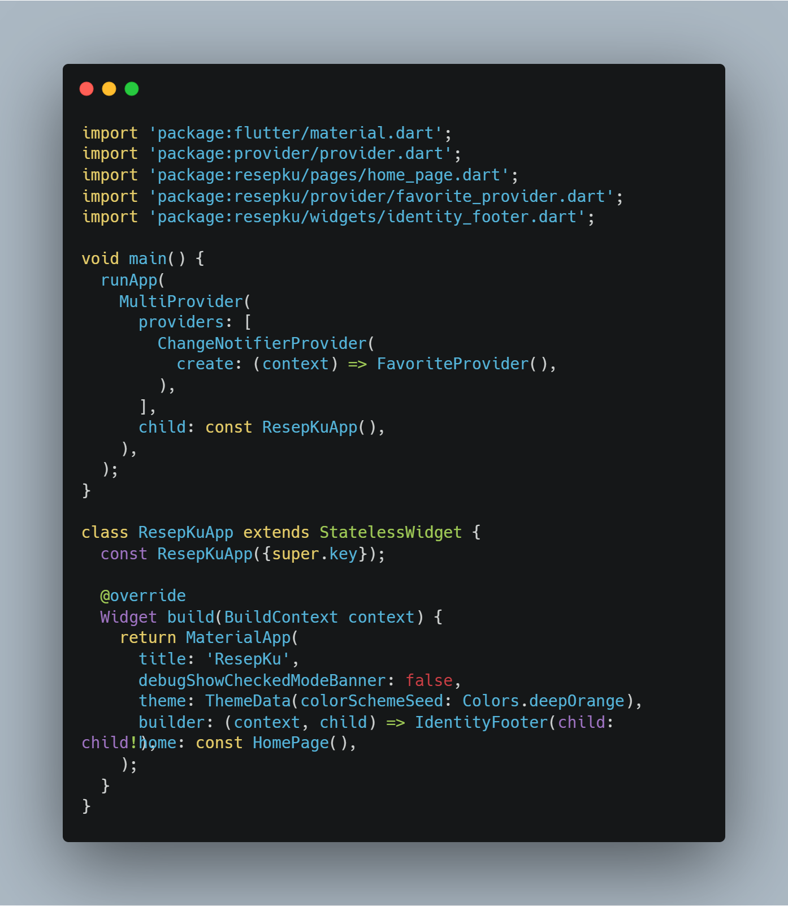
Pasang widget tersebut di AppBar HomePage. Isi akhir home_page.dart seperti ini.
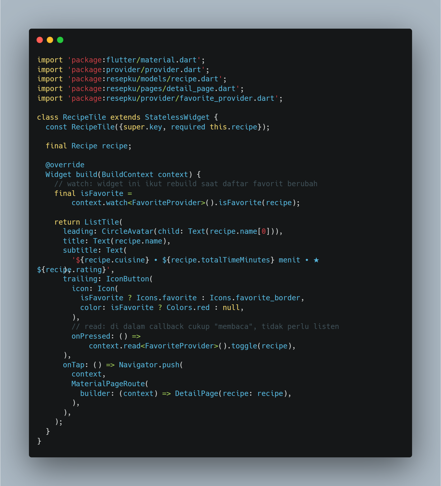
7. Checkpoint 2
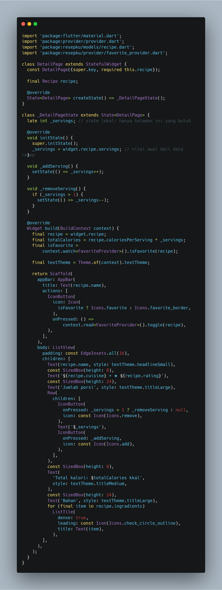
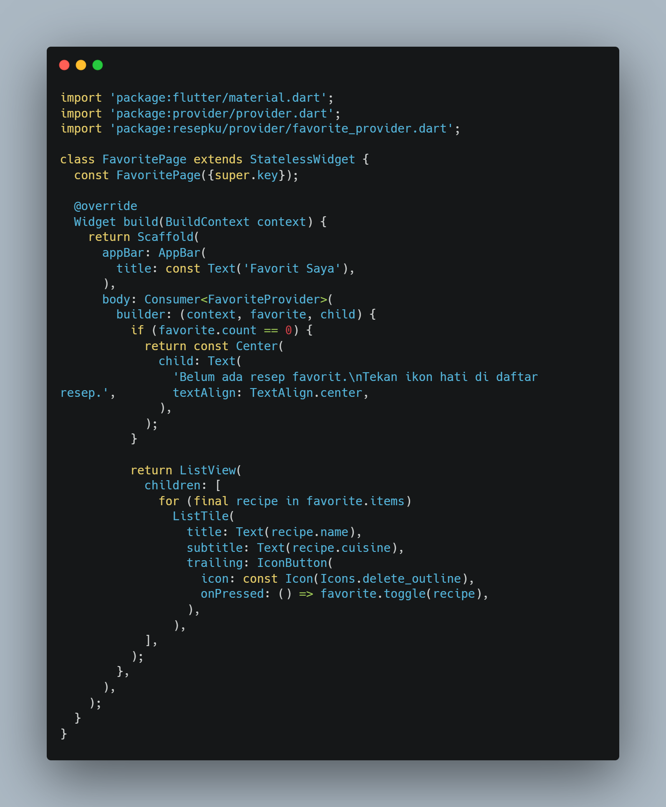
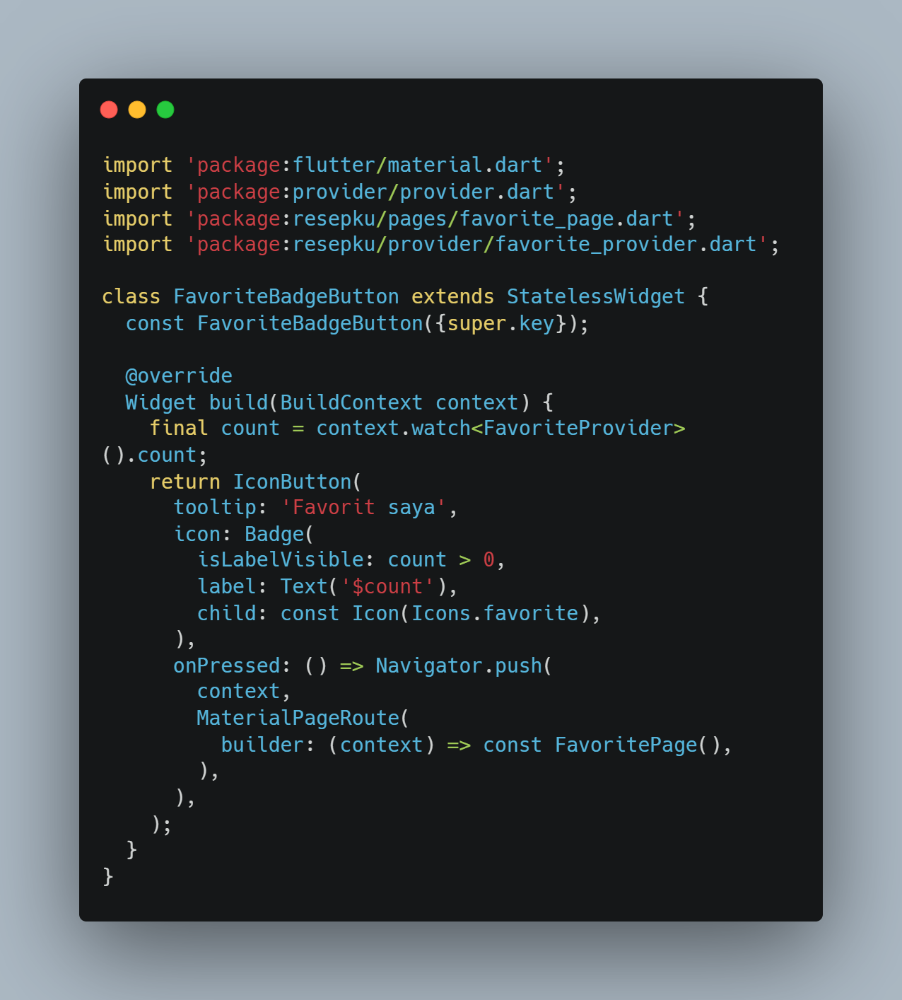
D. Pertanyaan Analisis
1. Tuliskan jawaban tiga pertanyaan pada Langkah B.2, lengkap dengan alasannya!
Ikon hati pada RecipeTile dapat berubah menjadi merah dan berubah bentuk ketika ditekan karena widget tersebut menggunakan StatefulWidget yang memanggil setState() secara lokal. Namun, jumlah favorit tidak bisa ditampilkan pada AppBar HomePage karena variabel _isFavorite hanya tersimpan di dalam class _RecipeTileState dan tidak dapat diakses oleh HomePage. Keterbatasan ini juga membuat DetailPage tidak mengetahui apakah sebuah resep sudah difavoritkan, karena saat berpindah halaman hanya objek Recipe yang dikirim, tanpa membawa data _isFavorite dari RecipeTile.
2. Mengapa jumlah porsi tetap menggunakan setState() dan tidak dimasukkan ke Provider?
Jumlah porsi tetap menggunakan setState() karena data tersebut merupakan ephemeral state atau state lokal yang hanya diperlukan sementara di DetailPage dan tidak digunakan oleh halaman atau widget lain. Hal ini sesuai dengan hasil percobaan pada skenario 6 Langkah C.7, di mana setelah pengguna mengubah jumlah porsi lalu kembali ke HomePage, widget DetailPage beserta state lokal _servings akan dihapus dari memori. Oleh karena itu, saat resep dibuka kembali, jumlah porsi kembali ke nilai awal. Perilaku ini sudah sesuai dengan kebutuhan aplikasi, sehingga data porsi tidak perlu disimpan dalam Provider, yang memang digunakan untuk app state global yang harus tetap tersedia di beberapa halaman.
3. Pindahkan ChangeNotifierProvider dari main() ke dalam HomePage (membungkus Scaffold). Apa yang terjadi?
Ketika ChangeNotifierProvider dipindahkan dari main() ke dalam HomePage untuk membungkus Scaffold, aplikasi menampilkan error ProviderNotFoundException saat halaman Favorit Saya dibuka. Hal ini terjadi karena Navigator.push membuka FavoritePage sebagai route baru yang berada di luar cabang widget tree milik HomePage. Karena FavoriteProvider hanya dideklarasikan di dalam HomePage, halaman FavoritePage tidak dapat mengakses provider tersebut melalui BuildContext-nya.
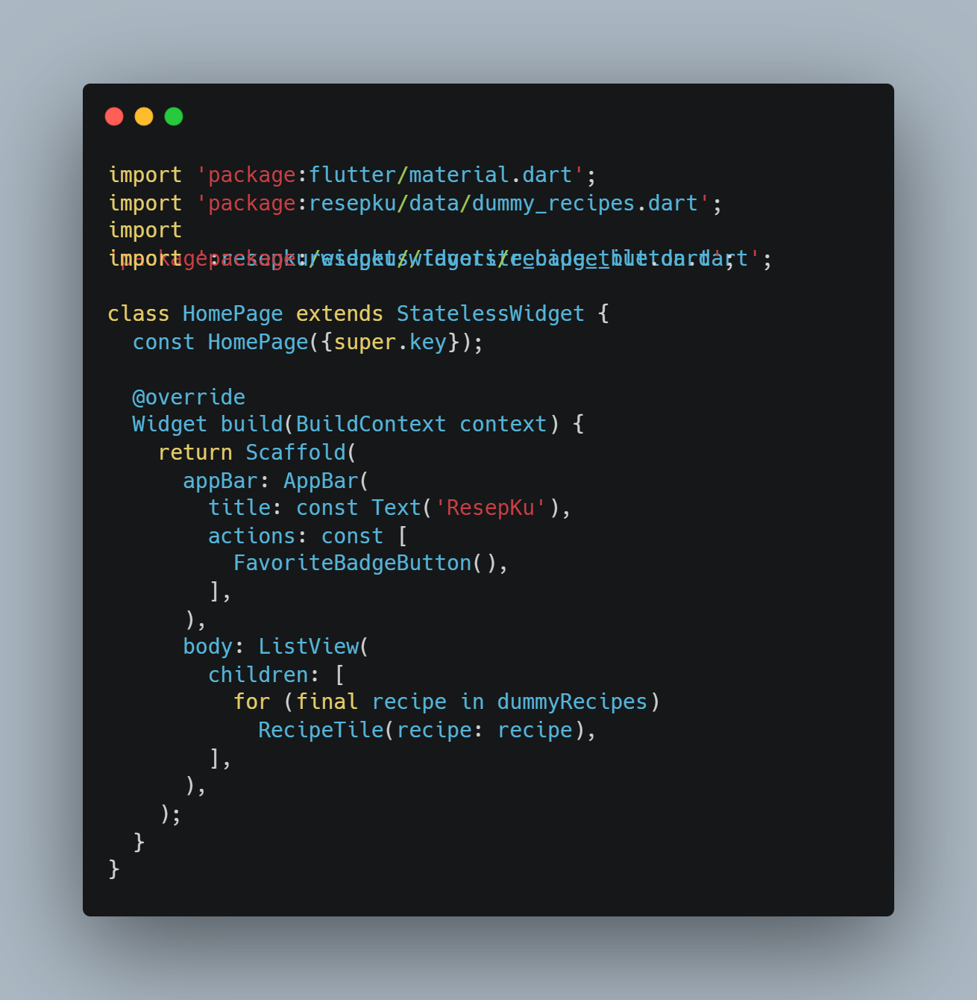
E. Latihan
Latihan 1 — Tema Gelap dan Terang
Tambahkan halaman Pengaturan yang berisi SwitchListTile "Mode gelap". Ketika switch diaktifkan, seluruh aplikasi berubah ke tema gelap.
1. Membuat ThemeProvider
Buat lib/providers/theme_provider.dart berisi class ThemeProvider yang meng-extend ChangeNotifier, dengan field ThemeMode, getter, dan satu method untuk mengubahnya.
Penjelasan: Kode ini membuat class ThemeProvider yang mewarisi ChangeNotifier untuk mengatur tema aplikasi secara global, yaitu mode terang dan gelap. Status tema disimpan dalam variabel privat _themeMode yang secara awal bernilai ThemeMode.light. Class ini juga memiliki getter themeMode dan isDarkMode untuk membaca tema yang sedang aktif. Ketika fungsi toggleTheme() dipanggil melalui tombol switch, nilai _themeMode akan berubah dan notifyListeners() memberi tahu semua widget yang menggunakan provider ini, sehingga tampilan aplikasi langsung berubah antara mode terang dan gelap secara otomatis.
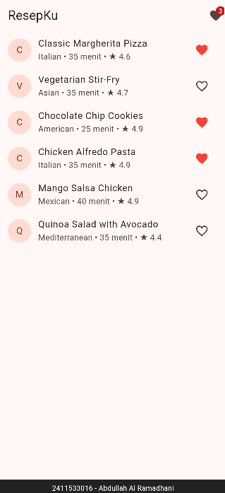
2. Mendaftarkan ThemeProvider
Daftarkan ThemeProvider di dalam MultiProvider pada main.dart. Di MaterialApp, tambahkan darkTheme dan themeMode yang dibaca dari ThemeProvider.
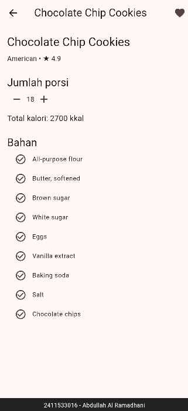
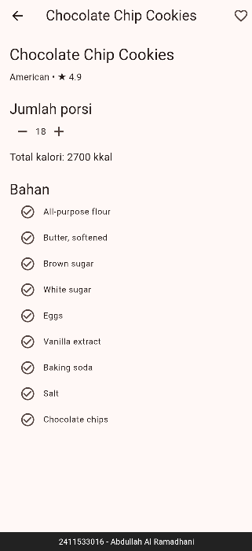
3. Membuat Halaman Pengaturan
Buat lib/pages/settings_page.dart yang berisi SwitchListTile, lalu tambahkan tombol ikon pengaturan di AppBar HomePage.
Penjelasan: Kode ini membuat halaman SettingsPage berbasis StatelessWidget yang menggunakan SwitchListTile agar pengguna dapat mengaktifkan atau menonaktifkan mode gelap. Halaman ini memakai context.watch<ThemeProvider>() untuk memantau nilai isDarkMode secara langsung, sehingga posisi switch selalu sesuai dengan tema yang sedang digunakan. Selain itu, context.read<ThemeProvider>().toggleTheme(value) dipanggil pada onChanged untuk mengubah tema seluruh aplikasi menjadi gelap atau terang ketika switch digeser.
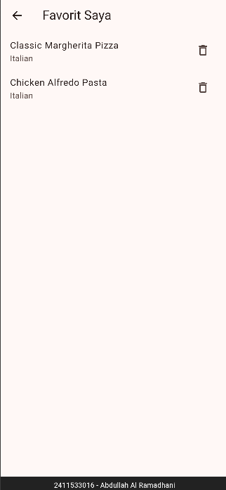
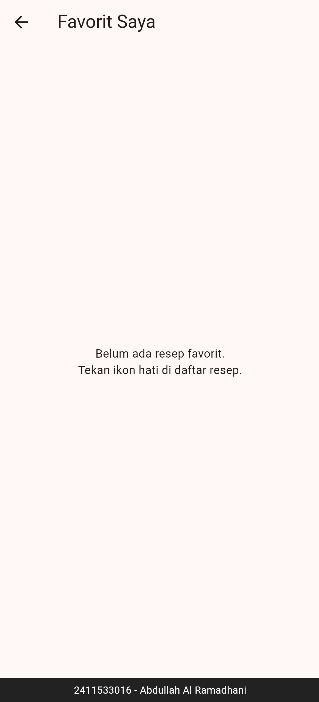
4. Output Latihan 1
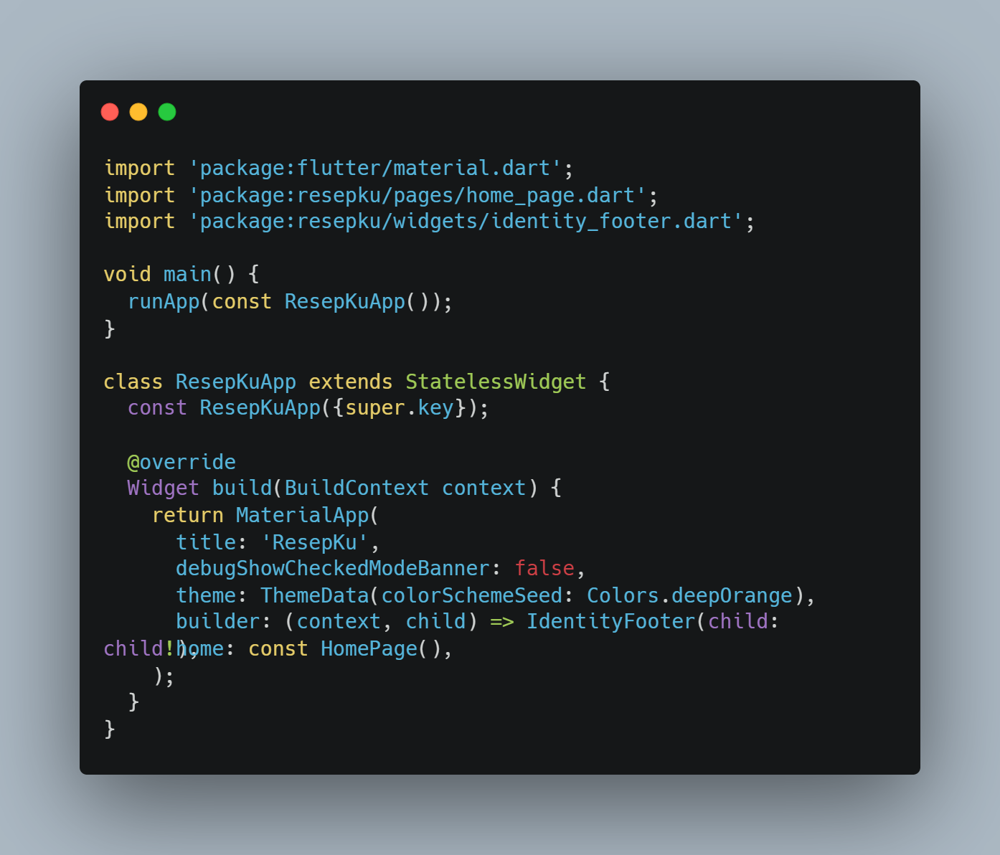
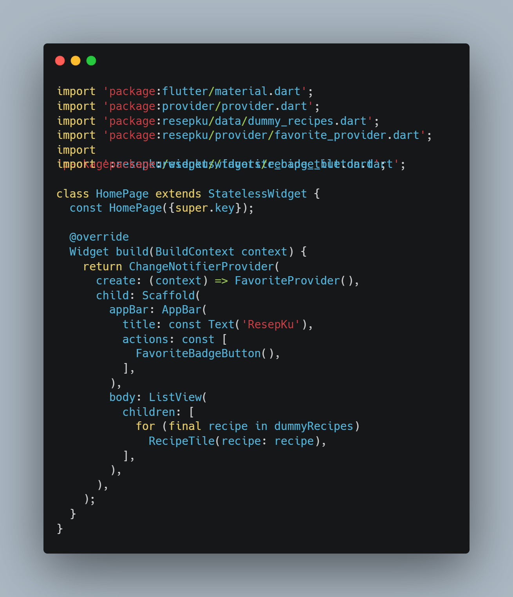
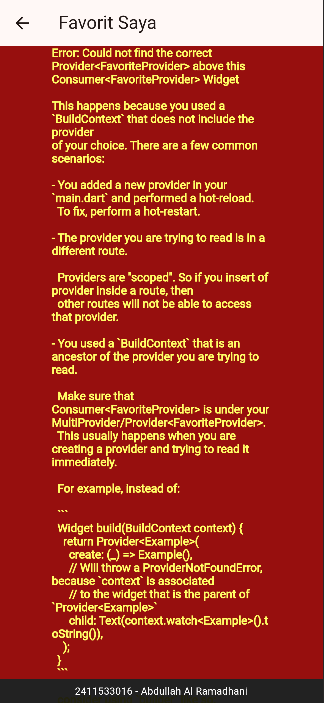
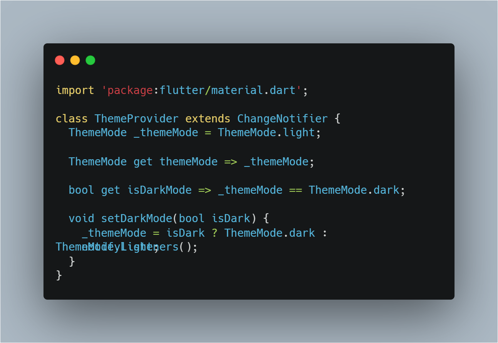
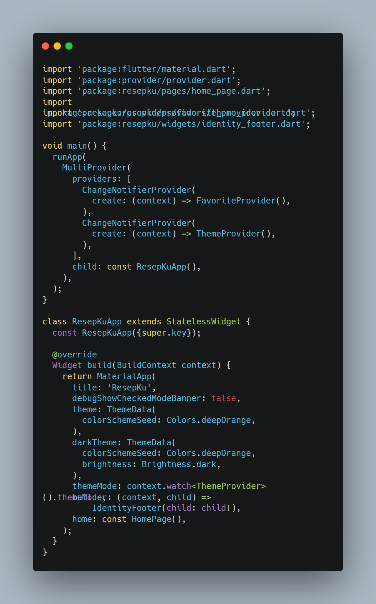
Latihan 2 — Menghapus Semua Favorit
1. Memastikan FavoriteProvider Memiliki Method clear()
Buka file lib/providers/favorite_provider.dart.
Penjelasan: Method clear() digunakan untuk menghapus seluruh data resep favorit yang tersimpan di dalam _items. Setelah data dihapus, notifyListeners() dipanggil agar seluruh widget yang menggunakan FavoriteProvider mengetahui perubahan tersebut dan memperbarui tampilannya.
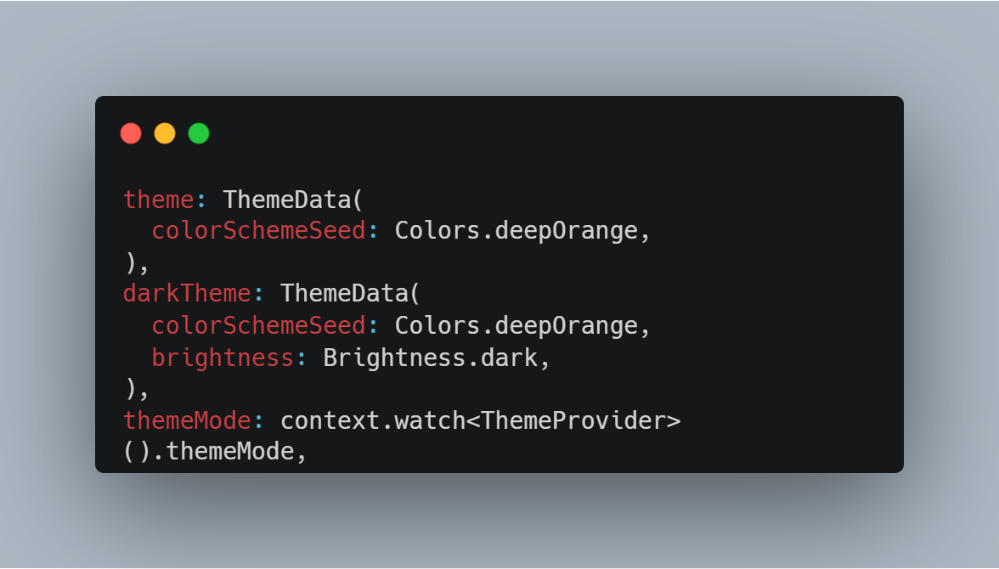
2. Mengubah FavoritePage
Ganti seluruh isi file favorite_page.dart dengan kode berikut.
Penjelasan: Kode FavoritePage menambahkan tombol Hapus semua pada AppBar yang menampilkan AlertDialog sebagai konfirmasi sebelum menghapus seluruh resep favorit. Jika pengguna memilih Hapus semua, method clear() akan dijalankan, sedangkan jika memilih Batal, data tetap dipertahankan. Tombol juga otomatis menjadi nonaktif ketika jumlah favorit kosong.
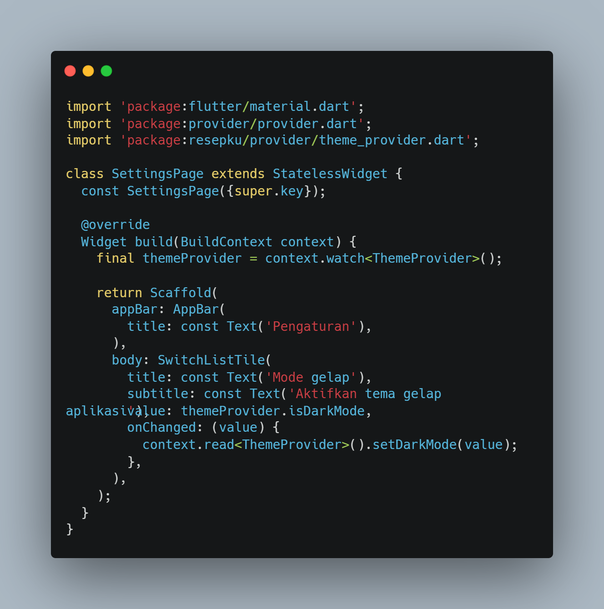
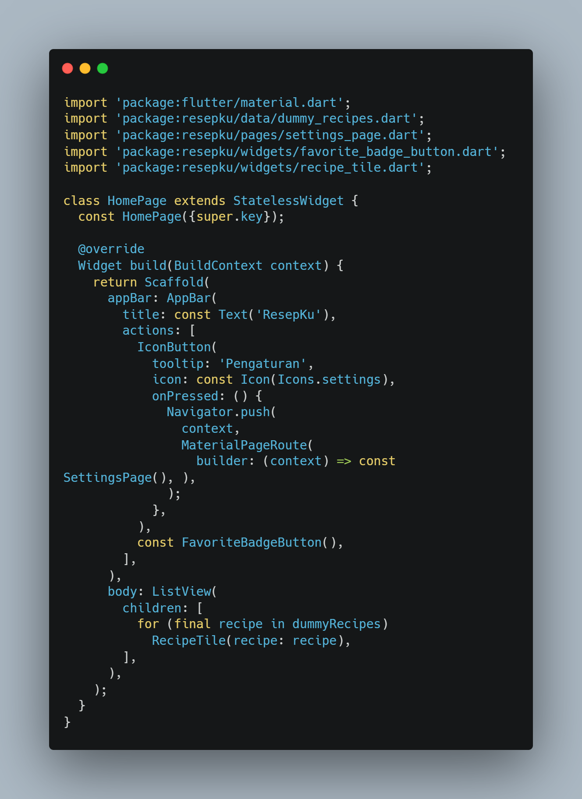
3. Output Latihan 2
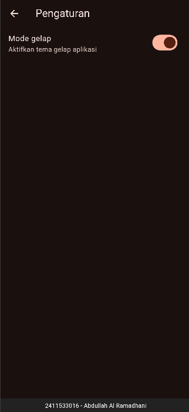
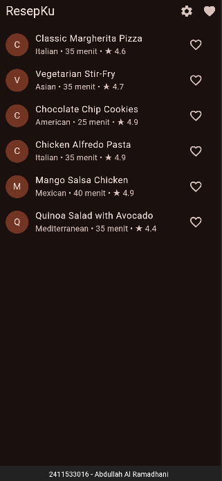
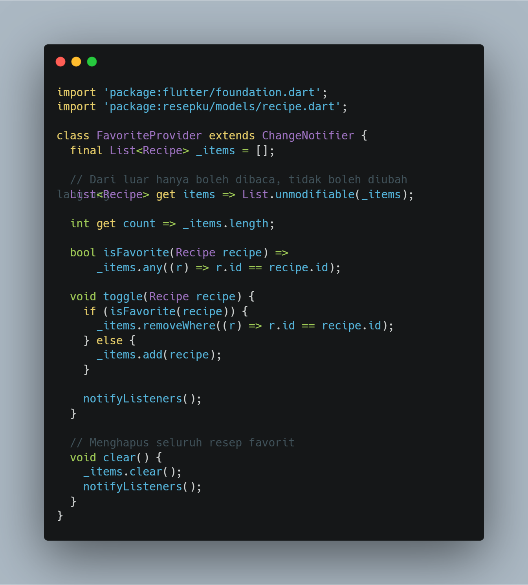
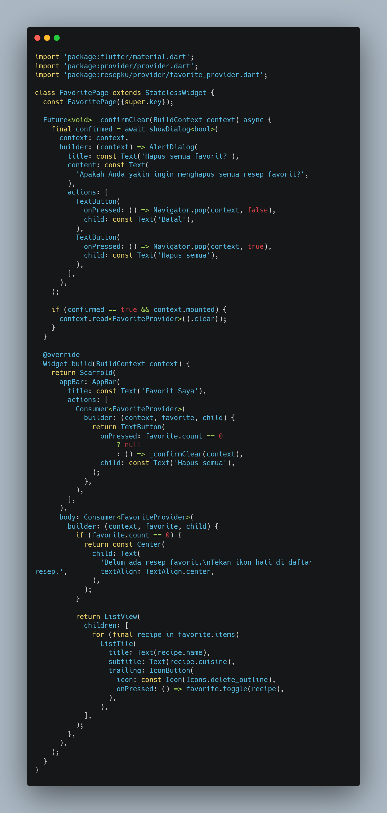
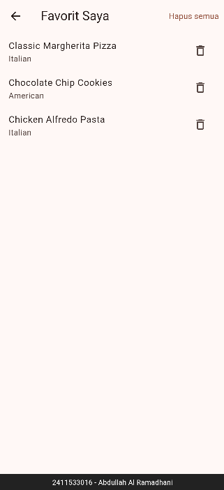
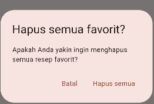
F. Kesimpulan
Berdasarkan praktikum dan analisis yang telah dilakukan, pemilihan cara pengelolaan state yang sesuai sangat memengaruhi performa serta struktur aplikasi. Penggunaan setState() terbukti paling cocok untuk ephemeral state atau state lokal yang hanya dibutuhkan pada satu halaman, seperti jumlah porsi pada halaman detail yang otomatis kembali ke nilai awal ketika halaman ditutup. Sebaliknya, paket Provider lebih tepat digunakan untuk app state atau state global, seperti daftar resep favorit dan pengaturan tema aplikasi. Dengan Provider, perubahan data pada satu bagian aplikasi dapat langsung memperbarui tampilan pada bagian lain secara otomatis.
Praktikum ini juga menunjukkan bahwa pemahaman tentang struktur widget tree sangat penting dalam Flutter. Meletakkan ChangeNotifierProvider pada posisi paling atas, yaitu membungkus MaterialApp, merupakan syarat utama agar state global dapat diakses dari semua halaman baru yang dibuka melalui Navigator.push. Dengan penerapan arsitektur Provider yang benar, aplikasi ResepKu dapat berjalan secara modular, interaktif, responsif, dan tidak mengalami kendala dalam mengakses context.